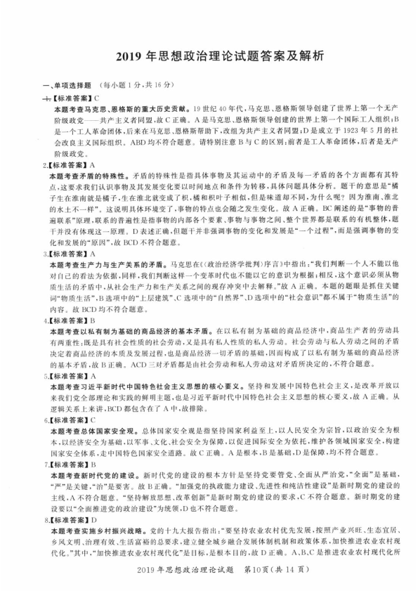
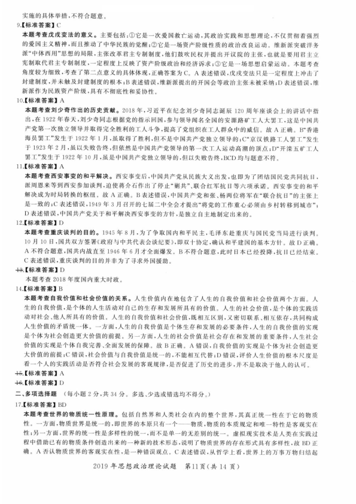
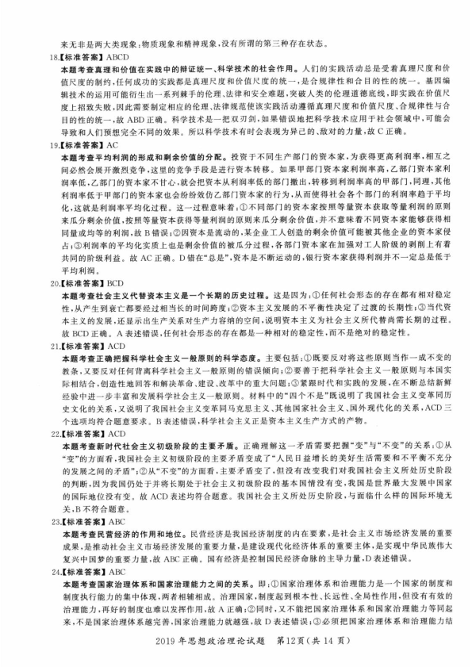
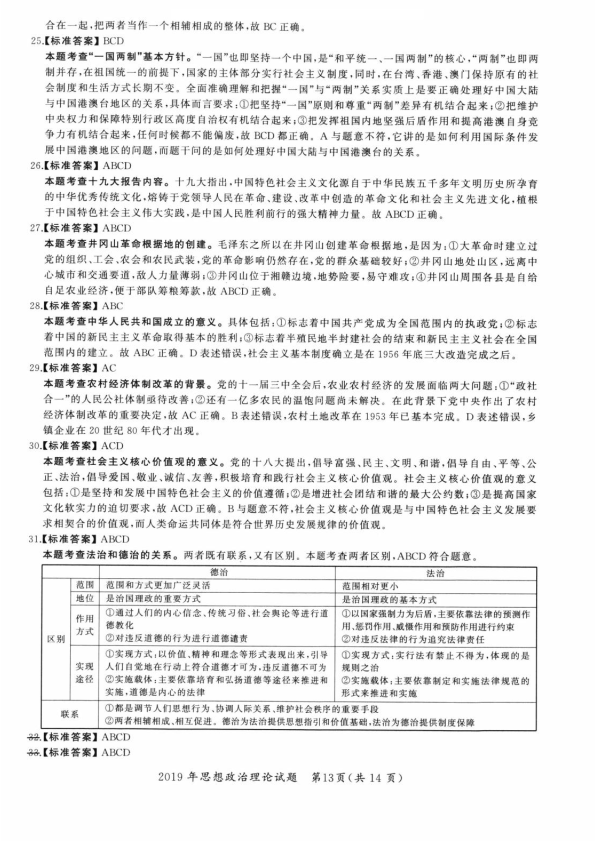
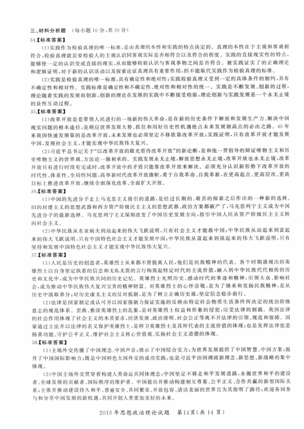
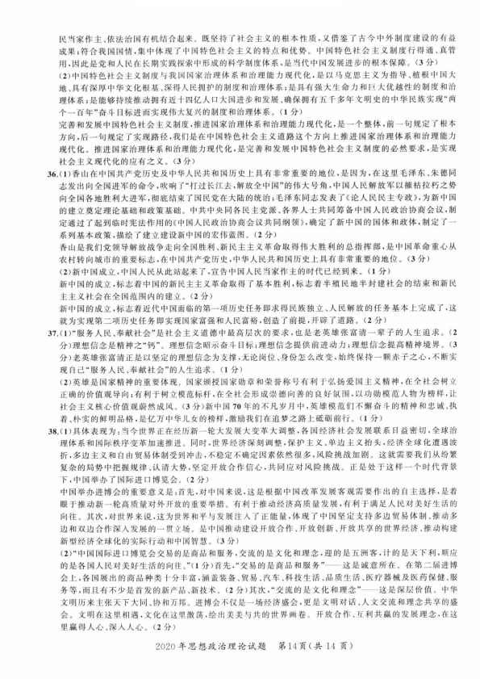

第 1 / 6 页

2019 年思想政治理论试题答案及解析
一、单项选择题
（每小题
1 分，共
16 分）
士【标准答案】C
本题考查马克思、恩格斯的重大历史贡献。
19 世纪40 年代，马克思、恩格斯领导创建了世界上第一个无产
阶级政党
共产主义者同盟，故C 正确。
A 是马克思、恩格斯领导创建的世界上第一个国际工人组织；B
是一个工人革命团体，后来在马克思、恩格斯帮助下，改组为共产主义者同盟；D 是成立千1923 年
5 月的社
会改良主义国际组织。
ABO 均不符合题意。请特别注意B 与C 的区别：前者是工人革命团体，后者是无产
阶级政党。
2. 【标准答案】A
本题考查矛盾的特殊性。矛盾的特殊性是指具体事物及其运动中的矛盾及每－矛盾的各个方面都有其特
点这要求我们认识事物及其发展变化要以时间地点和条件为转移，具体问题具体分析。题干的意思是“橘
子生在淮南就是橘子，生在淮北就变成了积，橘和积叶子相似，但是味道却不同
，为什么呢？因为淮南、淮北
的水土不一样” 。
这说明具体环境变了，事物的特点也会随之发生变化。
故A 正确。
BC 阐述的是“事物的普
遍联系”原理，联系的普遍性是指事物的内部各个要素、事物与事物之间、整个世界都是联系的有机整体，题
干并没有体现这一原理。
D 表述正确，但题干并非强调事物的变化和发展是“ 一个过程”，而是强调事物的变
化和发展的“原因”，故BCD 不符合题意。
3. 【标准答案】A
本题考查生产力与生产关系的矛盾。马克思在《（政治经济学批判〉序言》中指出：“我们判断一个人不能以他
对自己的看法为依据，同样，我们判断这样一个变革时代也不能以它的意识为根据；相反，这个意识必须从物
质生活的矛盾中，从社会生产力和生产关系之间的现存冲突中去解释。”故A 正确。本题的题眼是抓住关键
词“物质生活"'13 选项中的“上层建筑”、C 选项中的“自然界” 、D 选项中的“社会意识”都不属于“物质生活”的
内容。
故BCD 均不符合题意。
4. 【标准答案】B
本题考查以私有制为基础的商品经济的基本矛盾。在以私有制为基础的商品经济中，商品生产者的劳动具
有两重性：既是具有补会性质的社会劳动，又是具有私人性质的私人劳动。
社会劳动与私人劳动之间的矛盾
决定着商品经济的本质及发展过程，也是商品经济一切矛盾的基础，因而构成了以私有制为基础的商品经济
的基本矛盾，故B 正确。
ACD 三对矛盾都是由社会劳动和私人劳动这对矛盾所决定的，不符合题意。
5. 【标准答案】A
本题考查习近平新时代中国特色社会主义思想的核心要义。坚持和发展中国特色社会主义，是改革开放以
来我们党全部理论和实践的鲜明主题，也是习近平新时代中国特色衬会主义思想的核心要义，故A 正确。
从
逻辑关系上来讲，BCD 都包含在了A 中，故排除。
6. 【标准答案】C
本题考查总体国家安全观。总体国家安全观是指坚持国家利益至上，以人民安全为宗旨，以政治安全为根
本，以经济安全为基础，以军事、文化、社会安全为保障，以促进国际安全为依托，维护各领域国家安全，构建
国家安全体系，走中国特色国家安全道路。
故C 正确。
A 是根本，B 是基础，D 是保障，均不符合题意。
7. 【标准答案】
B
本题考查新时代党的建设。新时代党的建设的根本方针是坚持党要管党、全面从严治党，”全面” 是基础
，
“严” 是关键，“治”是要害。
故B 正确。
“加强党的执政能力建设、先进性和纯洁性建设“是新时期党的建设的
主线，A 不符合题意。
“坚持解放思想、改革创新” 是新时期党的建设的要求，C 不符合题意。新时期党的建
设要以“全面推进党的政治建设“为统领，D 也不符合题意。
8. 【标准答案】D
本题考查实施乡村振兴战略。党的十九大报告指出：“ 要坚持农业农村优先发展，按照产业兴旺、生态宜居、
乡风文明、治理有效、生活富裕的总要求，建立健全城乡融合发展体制机制和政策体系，加快推进农业衣村现
代化。”其中，“加快推进衣业农村现代化”是目标，是根本目的，故D 正确。
A 、B,C 是推进农业农村现代化所
2019 年思想政治理论试题
笫10 页（共
14 页）
查看 / 复制本页文字
2019 年思想政治理论试题答案及解析 一、单项选择题 （每小题 1 分，共 16 分） 士【标准答案】C 本题考查马克思、恩格斯的重大历史贡献。 19 世纪40 年代，马克思、恩格斯领导创建了世界上第一个无产 阶级政党 共产主义者同盟，故C 正确。 A 是马克思、恩格斯领导创建的世界上第一个国际工人组织；B 是一个工人革命团体，后来在马克思、恩格斯帮助下，改组为共产主义者同盟；D 是成立千1923 年 5 月的社 会改良主义国际组织。 ABO 均不符合题意。请特别注意B 与C 的区别：前者是工人革命团体，后者是无产 阶级政党。 2. 【标准答案】A 本题考查矛盾的特殊性。矛盾的特殊性是指具体事物及其运动中的矛盾及每－矛盾的各个方面都有其特 点这要求我们认识事物及其发展变化要以时间地点和条件为转移，具体问题具体分析。题干的意思是“橘 子生在淮南就是橘子，生在淮北就变成了积，橘和积叶子相似，但是味道却不同 ，为什么呢？因为淮南、淮北 的水土不一样” 。 这说明具体环境变了，事物的特点也会随之发生变化。 故A 正确。 BC 阐述的是“事物的普 遍联系”原理，联系的普遍性是指事物的内部各个要素、事物与事物之间、整个世界都是联系的有机整体，题 干并没有体现这一原理。 D 表述正确，但题干并非强调事物的变化和发展是“ 一个过程”，而是强调事物的变 化和发展的“原因”，故BCD 不符合题意。 3. 【标准答案】A 本题考查生产力与生产关系的矛盾。马克思在《（政治经济学批判〉序言》中指出：“我们判断一个人不能以他 对自己的看法为依据，同样，我们判断这样一个变革时代也不能以它的意识为根据；相反，这个意识必须从物 质生活的矛盾中，从社会生产力和生产关系之间的现存冲突中去解释。”故A 正确。本题的题眼是抓住关键 词“物质生活"'13 选项中的“上层建筑”、C 选项中的“自然界” 、D 选项中的“社会意识”都不属于“物质生活”的 内容。 故BCD 均不符合题意。 4. 【标准答案】B 本题考查以私有制为基础的商品经济的基本矛盾。在以私有制为基础的商品经济中，商品生产者的劳动具 有两重性：既是具有补会性质的社会劳动，又是具有私人性质的私人劳动。 社会劳动与私人劳动之间的矛盾 决定着商品经济的本质及发展过程，也是商品经济一切矛盾的基础，因而构成了以私有制为基础的商品经济 的基本矛盾，故B 正确。 ACD 三对矛盾都是由社会劳动和私人劳动这对矛盾所决定的，不符合题意。 5. 【标准答案】A 本题考查习近平新时代中国特色社会主义思想的核心要义。坚持和发展中国特色社会主义，是改革开放以 来我们党全部理论和实践的鲜明主题，也是习近平新时代中国特色衬会主义思想的核心要义，故A 正确。 从 逻辑关系上来讲，BCD 都包含在了A 中，故排除。 6. 【标准答案】C 本题考查总体国家安全观。总体国家安全观是指坚持国家利益至上，以人民安全为宗旨，以政治安全为根 本，以经济安全为基础，以军事、文化、社会安全为保障，以促进国际安全为依托，维护各领域国家安全，构建 国家安全体系，走中国特色国家安全道路。 故C 正确。 A 是根本，B 是基础，D 是保障，均不符合题意。 7. 【标准答案】 B 本题考查新时代党的建设。新时代党的建设的根本方针是坚持党要管党、全面从严治党，”全面” 是基础 ， “严” 是关键，“治”是要害。 故B 正确。 “加强党的执政能力建设、先进性和纯洁性建设“是新时期党的建设的 主线，A 不符合题意。 “坚持解放思想、改革创新” 是新时期党的建设的要求，C 不符合题意。新时期党的建 设要以“全面推进党的政治建设“为统领，D 也不符合题意。 8. 【标准答案】D 本题考查实施乡村振兴战略。党的十九大报告指出：“ 要坚持农业农村优先发展，按照产业兴旺、生态宜居、 乡风文明、治理有效、生活富裕的总要求，建立健全城乡融合发展体制机制和政策体系，加快推进农业衣村现 代化。”其中，“加快推进衣业农村现代化”是目标，是根本目的，故D 正确。 A 、B,C 是推进农业农村现代化所 2019 年思想政治理论试题 笫10 页（共 14 页）
第 2 / 6 页

实施的具体举措，不符合题意。
9. 【标准答案】C
本题考查戊戌变法的意义。
主要包括：CD 它是一次爱国救亡运动，其政治实践和思想理论，不仅贯彻着强烈
的爱国主义精神，而且推动了中华民族的觉醒；＠它是一场资产阶级性质的政治改良运动。
维新派突破洋务
派”中体西用“思想的局限，主张改革君主专制制度，他们鼓吹民权并提出开议院的主张，也就是要用君主立
宪制取代君主专制制度
，一定程度上反映了资产阶级政治和经济诉求；＠它是一场思想启蒙运动。本题考查
角度较为细致，考查了第二点意义的具体体现，正确答案为C 。
A 表述错误，戊戌变法只是一定程度上冲击了
封建制度，并未触及封建制度的根本；B 表述错误，维新派提出的开国会等政治主张未被采纳；D 表述错误，维
新派作为民族资产阶级，具有不彻底性和妥协性。
10. 【标准答案】A
本题考查刘少奇作出的历史贡献。
2018 年，习近平在纪念刘少奇同志诞辰
120 周年座谈会上的讲话中指
出
，在1922 年春天，刘少奇同志根据党的指示回国，参与领导闻名全国的安源路矿工人大罢工．这是中国共
产党第一次独立领导并取得完全胜利的工人斗争，提高了党组织在工人群众中的威信。
故A 正确。
B" 香港
海员罢工“发生千1922 年
1 月，虽取得了胜利，但不是中国共产党独立领导的；C" 京汉铁路丁＿人罢工”发生
千
1 923 年2 月，虽以失败告终，但依然是中国共产党领导的第一次工人运动高潮的顶点
；D" 开洪五矿工人
罢工”发生千
1922 年
10 月，虽是中国共产党独立领导的，但以失败告终，BCD 均与题意不符。
11. 【标准答案】A
本题考查西安事变的和平解决。西安事变后，中国共产党从民族大义出发，也即为了闭结国民党共同抗日，
派周恩来等到西安参加谈判，迫使蒋介石作出了停止“剿共”、联合红军抗日等六项承诺。
西安事变的和平
解决成为时局转换的枢纽。
故A 正确。
B 表述错误，中国共产党和张、杨两位将军在“联合抗日”的主张上
是一致的；C 表述错误，1 949 年
3 月召开的七届二中全会才提出“将党的工作重心必须由乡村转移到城市";
D 表述错误，中国共产党关于和平解决西安事变的方针，是独立自主地制定出来的。
12. 【标准答案】D
本题考查重庆谈判的目的。
1 945 年8 月，为了争取国内和平民主，毛泽东赴重庆与国民党当局进行谈判。
10 月
10 日，国共双方签署《政府与中共代表会谈纪要》，即双十协定，确认和平建国的基本方针。
故D 正确。
A 不符合题意，国共内战直至1946 年
6 月才全面爆发。
B 不符合题意，此时日本已经投降，抗日已经结束。
C 表述错误，重庆谈判的目的并非为了寻求外国援助。
岭．【标准答案】D
本题考查2018 年度国内重大时政。
14. 【标准答案】B
本题考查自我价值和社会价值的关系。人生价值内在地包含了人生的自我价值和社会价值两个方面。
人
生的自我价值，是个体的人生活动对自己的生存和发展所具有的价值。
人生的社会价值，是个体的实践活
动对社会、他人所具有的价值。
人生的自我价值和社会价值，既相互区别，又密切联系、相互依存，共同构成
人生价值的矛盾统一体。一方面，人生的自我价值是个体生存和发展的必要条件，人生的自我价值的实现
是个体为社会创造更大价值的前提。
另一方面，人生的社会价值是社会存在和发展的重要条件，人生社会
价值的实现是个体自我完善、全面发展的保障。
故B 正确。
A 错误，自我价值的实现是个体为社会创造更
大价值的前提；C 错误，社会价值与自我价值是统一的，不能相互代替；D 错误，评价人生价值的根本尺度是
看一个人的实践活动是否符合社会发展的客观规律，是否促进了历史的进步，并不是取决于他人的认可。
廿．【标准答案】A
廿．【标准答案】D
二、多项选择题
（每小题2 分，共34 分。
多选、少选或错选均不得分。）
17. 【标准答案】BO
本题考查世界的物质统—性原理。包括自然界和人类社会在内的整个世界，其真正统一性在千它的物质
性。
一方面，物质世界是统一的，即世界的本原只有一个一一物质，物质的本质规定和唯一特性是客观实在
性；另一方面，世界的统一性是多样性的统一，而不是单一的无差别的统一。
虚拟现实技术是人类在实践过
程中借助已有的物质条件创造出来的一种新的技术形态，说明了物质世界的存在形式具有多样性，故
13D 正
确。
A 否认物质世界的客观实在性，是一种错误观点。
C 表述错误，从哲学上看，世界上的万事万物归结起
2019 年思想政治理论试题
笫11 页（共
1 4 页）
查看 / 复制本页文字
实施的具体举措，不符合题意。 9. 【标准答案】C 本题考查戊戌变法的意义。 主要包括：CD 它是一次爱国救亡运动，其政治实践和思想理论，不仅贯彻着强烈 的爱国主义精神，而且推动了中华民族的觉醒；＠它是一场资产阶级性质的政治改良运动。 维新派突破洋务 派”中体西用“思想的局限，主张改革君主专制制度，他们鼓吹民权并提出开议院的主张，也就是要用君主立 宪制取代君主专制制度 ，一定程度上反映了资产阶级政治和经济诉求；＠它是一场思想启蒙运动。本题考查 角度较为细致，考查了第二点意义的具体体现，正确答案为C 。 A 表述错误，戊戌变法只是一定程度上冲击了 封建制度，并未触及封建制度的根本；B 表述错误，维新派提出的开国会等政治主张未被采纳；D 表述错误，维 新派作为民族资产阶级，具有不彻底性和妥协性。 10. 【标准答案】A 本题考查刘少奇作出的历史贡献。 2018 年，习近平在纪念刘少奇同志诞辰 120 周年座谈会上的讲话中指 出 ，在1922 年春天，刘少奇同志根据党的指示回国，参与领导闻名全国的安源路矿工人大罢工．这是中国共 产党第一次独立领导并取得完全胜利的工人斗争，提高了党组织在工人群众中的威信。 故A 正确。 B" 香港 海员罢工“发生千1922 年 1 月，虽取得了胜利，但不是中国共产党独立领导的；C" 京汉铁路丁＿人罢工”发生 千 1 923 年2 月，虽以失败告终，但依然是中国共产党领导的第一次工人运动高潮的顶点 ；D" 开洪五矿工人 罢工”发生千 1922 年 10 月，虽是中国共产党独立领导的，但以失败告终，BCD 均与题意不符。 11. 【标准答案】A 本题考查西安事变的和平解决。西安事变后，中国共产党从民族大义出发，也即为了闭结国民党共同抗日， 派周恩来等到西安参加谈判，迫使蒋介石作出了停止“剿共”、联合红军抗日等六项承诺。 西安事变的和平 解决成为时局转换的枢纽。 故A 正确。 B 表述错误，中国共产党和张、杨两位将军在“联合抗日”的主张上 是一致的；C 表述错误，1 949 年 3 月召开的七届二中全会才提出“将党的工作重心必须由乡村转移到城市"; D 表述错误，中国共产党关于和平解决西安事变的方针，是独立自主地制定出来的。 12. 【标准答案】D 本题考查重庆谈判的目的。 1 945 年8 月，为了争取国内和平民主，毛泽东赴重庆与国民党当局进行谈判。 10 月 10 日，国共双方签署《政府与中共代表会谈纪要》，即双十协定，确认和平建国的基本方针。 故D 正确。 A 不符合题意，国共内战直至1946 年 6 月才全面爆发。 B 不符合题意，此时日本已经投降，抗日已经结束。 C 表述错误，重庆谈判的目的并非为了寻求外国援助。 岭．【标准答案】D 本题考查2018 年度国内重大时政。 14. 【标准答案】B 本题考查自我价值和社会价值的关系。人生价值内在地包含了人生的自我价值和社会价值两个方面。 人 生的自我价值，是个体的人生活动对自己的生存和发展所具有的价值。 人生的社会价值，是个体的实践活 动对社会、他人所具有的价值。 人生的自我价值和社会价值，既相互区别，又密切联系、相互依存，共同构成 人生价值的矛盾统一体。一方面，人生的自我价值是个体生存和发展的必要条件，人生的自我价值的实现 是个体为社会创造更大价值的前提。 另一方面，人生的社会价值是社会存在和发展的重要条件，人生社会 价值的实现是个体自我完善、全面发展的保障。 故B 正确。 A 错误，自我价值的实现是个体为社会创造更 大价值的前提；C 错误，社会价值与自我价值是统一的，不能相互代替；D 错误，评价人生价值的根本尺度是 看一个人的实践活动是否符合社会发展的客观规律，是否促进了历史的进步，并不是取决于他人的认可。 廿．【标准答案】A 廿．【标准答案】D 二、多项选择题 （每小题2 分，共34 分。 多选、少选或错选均不得分。） 17. 【标准答案】BO 本题考查世界的物质统—性原理。包括自然界和人类社会在内的整个世界，其真正统一性在千它的物质 性。 一方面，物质世界是统一的，即世界的本原只有一个一一物质，物质的本质规定和唯一特性是客观实在 性；另一方面，世界的统一性是多样性的统一，而不是单一的无差别的统一。 虚拟现实技术是人类在实践过 程中借助已有的物质条件创造出来的一种新的技术形态，说明了物质世界的存在形式具有多样性，故 13D 正 确。 A 否认物质世界的客观实在性，是一种错误观点。 C 表述错误，从哲学上看，世界上的万事万物归结起 2019 年思想政治理论试题 笫11 页（共 1 4 页）
第 3 / 6 页

来无非是两大类现象：物质现象和精神现象，没有所谓的第三种存在状态。
18. 【标准答案】ABCD
本题考查真理和价值在实践中的辩证统一、科学技术的社会作用。人们的实践活动总是受着真理尺度和价
值尺度的制约，任何成功的实践都是真理尺度和价值尺度的统一
，是合规律性和合目的性的统一。
基因编
辑技术的运用可能衍生出一系列棘手的伦理、法律和安全难题，突破人类的伦理道德底线，即实践在价值尺
度上招致失败，因此需要制定相应的伦理、法律规范使该实践活动遵循真理尺度和价值尺度、合规律性与合
目的性的统一，故ABD 正确。科学技术是一把双刃剑，如果错误地把科学技术应用于社会领域中，可能会
导致和人们预想完全不同的效果。所以科学技术有时会表现为异己的、敌对的力量，故C 正确。
19. 【标准答案】AC
本题考查平均利润的形成和剩余价值的分配。投资千不同生产部门的资本家，为获得更高利润率，相互之
间必然会展开激烈竞争，这里的竞争手段是进行资本转移。
如果甲部门资本家利润率高，乙部门资本家利
润率低，乙部门的资本家不甘心，就会把资本从利润率低的部门撤出，转移到利润率高的甲部门，同理，其他
利润率低于甲部门的资本家也会纷纷效仿乙部门资本家的行为，从而使得社会各个部门的利润率趋于平均
化，这就是利润率平均化过程。
这一过程意味着
：CD 不同部门的资本家按照等量资本获取等量利润的原则
来瓜分剩余价值，按照等量资本获得等抵利润的原则来瓜分剩余价值，并不意味着不同资本家能够获得相
同员或均等的利润，故B 错误；＠因资本是流动的，某企业工人创造的剩余价值可能被其他企业的资本家侵
占；＠利润率的平均化实质上也是剩余价值的被瓜分过程，各部门资本家在加强对工人阶级的剥削上有着
共同的阶级利益。
故AC 正确。
D 错在“总是“，资本是不断运动的，银行资本家获得利润并不一定总是低于
平均利润。
20. 【标准答案】BCD
本题考查社会主义代替资本主义是一个长期的历史过程。这是因为：CD 任何社会形态的存在都有相对稳定
性，从产生到衰亡都要经过相当长的时间跨度；＠资本主义发展的不平衡性决定了过渡的长期性战）当代资
本主义的发展，还显示出生产关系对生产力容纳的空间，说明资本主义为社会主义所代替尚需长期的过程。
故BCD 正确。
A 表述错误，任何社会形态的存在都是一种相对的稳定性
，而不是绝对的稳定性。
21. 【标准答案】ACD
本题考查正确把握科学社会主义一般原则的科学态度。主要包括
：CD 既要反对将这些原则当作一成不变的
教条，又要反对任何背离科学社会主义一般原则的错误倾向；＠要善于把科学社会主义一般原则与本国实
际相结合，创造性地回答和解决革命、建设、改革中的重大问题；＠紧跟时代和实践的发展，在不断总结新鲜
经验中进一步丰富和发展科学社会主义一般原则。材料中的”四个不是“既说明了我国社会主义变革同历
史文化的关系，又说明了我国社会主义变革同马克思主义、其他国家社会主义、国外现代化的关系，ACD 三
个选项均符合题意要求。
B 表述错误，科学社会主义正是资本主义生产方式的产物。
22. 【标准答案】ACD
本题考查新时代社会主义初级阶段的主要矛盾。正确理解这一矛盾需要把握“变”与“不变”的关系：CD 从
“变”的方面看，我国社会主义初级阶段的主要矛盾变成了“人民日益增长的美好生活需要和不平衡不充分
的发展之间的矛盾” 辽）从“不变”的方面看，主要矛盾变了，但没有改变我们对我国社会主义所处历史阶段
的判断，因为我国仍处千并将长期处于社会主义初级阶段的基本国情没有变，我国是世界最大发展中国家
的国际地位没有变。
故ACD 表述均符合题意。
我国社会主义所处历史阶段，与面临什么样的国际环境无
关，B 不符合题意。
23. 【标准答案】ABC
本题考查民营经济的作用和地位。
民营经济是我国经济制度的内在要素，是社会主义市场经济发展的重要
成果，是推动社会主义市场经济发展的重要力最，是建设现代化经济体系的重要主体，是实现中华民族伟大
复兴中国梦的重要力扯，故ABC 正确。
国有经济是控制国民经济命脉的主导力最，D 表述错误。
24. 【标准答案】ABC
本题考查国家治理体系和国家治理能力之间的关系。即：CD 国家治理体系和治理能力是一个国家的制度和
制度执行能力的集中体现，两者相辅相成。
治理国家，制度起到根本性、长远性、全局性作用，但没有有效的
治理能力，再好的制度也难以发挥作用，故A 正确；＠同时，又不能把国家治理体系和国家治理能力等同起
来，不是国家治理体系越完善，国家治理能力就越强，故D 表述错误；＠必须把国家治理体系和治理能力结
2019 年思想政治理论试题
笫12 页（共14 页）
查看 / 复制本页文字
来无非是两大类现象：物质现象和精神现象，没有所谓的第三种存在状态。 18. 【标准答案】ABCD 本题考查真理和价值在实践中的辩证统一、科学技术的社会作用。人们的实践活动总是受着真理尺度和价 值尺度的制约，任何成功的实践都是真理尺度和价值尺度的统一 ，是合规律性和合目的性的统一。 基因编 辑技术的运用可能衍生出一系列棘手的伦理、法律和安全难题，突破人类的伦理道德底线，即实践在价值尺 度上招致失败，因此需要制定相应的伦理、法律规范使该实践活动遵循真理尺度和价值尺度、合规律性与合 目的性的统一，故ABD 正确。科学技术是一把双刃剑，如果错误地把科学技术应用于社会领域中，可能会 导致和人们预想完全不同的效果。所以科学技术有时会表现为异己的、敌对的力量，故C 正确。 19. 【标准答案】AC 本题考查平均利润的形成和剩余价值的分配。投资千不同生产部门的资本家，为获得更高利润率，相互之 间必然会展开激烈竞争，这里的竞争手段是进行资本转移。 如果甲部门资本家利润率高，乙部门资本家利 润率低，乙部门的资本家不甘心，就会把资本从利润率低的部门撤出，转移到利润率高的甲部门，同理，其他 利润率低于甲部门的资本家也会纷纷效仿乙部门资本家的行为，从而使得社会各个部门的利润率趋于平均 化，这就是利润率平均化过程。 这一过程意味着 ：CD 不同部门的资本家按照等量资本获取等量利润的原则 来瓜分剩余价值，按照等量资本获得等抵利润的原则来瓜分剩余价值，并不意味着不同资本家能够获得相 同员或均等的利润，故B 错误；＠因资本是流动的，某企业工人创造的剩余价值可能被其他企业的资本家侵 占；＠利润率的平均化实质上也是剩余价值的被瓜分过程，各部门资本家在加强对工人阶级的剥削上有着 共同的阶级利益。 故AC 正确。 D 错在“总是“，资本是不断运动的，银行资本家获得利润并不一定总是低于 平均利润。 20. 【标准答案】BCD 本题考查社会主义代替资本主义是一个长期的历史过程。这是因为：CD 任何社会形态的存在都有相对稳定 性，从产生到衰亡都要经过相当长的时间跨度；＠资本主义发展的不平衡性决定了过渡的长期性战）当代资 本主义的发展，还显示出生产关系对生产力容纳的空间，说明资本主义为社会主义所代替尚需长期的过程。 故BCD 正确。 A 表述错误，任何社会形态的存在都是一种相对的稳定性 ，而不是绝对的稳定性。 21. 【标准答案】ACD 本题考查正确把握科学社会主义一般原则的科学态度。主要包括 ：CD 既要反对将这些原则当作一成不变的 教条，又要反对任何背离科学社会主义一般原则的错误倾向；＠要善于把科学社会主义一般原则与本国实 际相结合，创造性地回答和解决革命、建设、改革中的重大问题；＠紧跟时代和实践的发展，在不断总结新鲜 经验中进一步丰富和发展科学社会主义一般原则。材料中的”四个不是“既说明了我国社会主义变革同历 史文化的关系，又说明了我国社会主义变革同马克思主义、其他国家社会主义、国外现代化的关系，ACD 三 个选项均符合题意要求。 B 表述错误，科学社会主义正是资本主义生产方式的产物。 22. 【标准答案】ACD 本题考查新时代社会主义初级阶段的主要矛盾。正确理解这一矛盾需要把握“变”与“不变”的关系：CD 从 “变”的方面看，我国社会主义初级阶段的主要矛盾变成了“人民日益增长的美好生活需要和不平衡不充分 的发展之间的矛盾” 辽）从“不变”的方面看，主要矛盾变了，但没有改变我们对我国社会主义所处历史阶段 的判断，因为我国仍处千并将长期处于社会主义初级阶段的基本国情没有变，我国是世界最大发展中国家 的国际地位没有变。 故ACD 表述均符合题意。 我国社会主义所处历史阶段，与面临什么样的国际环境无 关，B 不符合题意。 23. 【标准答案】ABC 本题考查民营经济的作用和地位。 民营经济是我国经济制度的内在要素，是社会主义市场经济发展的重要 成果，是推动社会主义市场经济发展的重要力最，是建设现代化经济体系的重要主体，是实现中华民族伟大 复兴中国梦的重要力扯，故ABC 正确。 国有经济是控制国民经济命脉的主导力最，D 表述错误。 24. 【标准答案】ABC 本题考查国家治理体系和国家治理能力之间的关系。即：CD 国家治理体系和治理能力是一个国家的制度和 制度执行能力的集中体现，两者相辅相成。 治理国家，制度起到根本性、长远性、全局性作用，但没有有效的 治理能力，再好的制度也难以发挥作用，故A 正确；＠同时，又不能把国家治理体系和国家治理能力等同起 来，不是国家治理体系越完善，国家治理能力就越强，故D 表述错误；＠必须把国家治理体系和治理能力结 2019 年思想政治理论试题 笫12 页（共14 页）
第 4 / 6 页

合在一起，把两者当作一个相辅相成的整体，故BC 正确。
25. 【标准答案】BCD
本题考查”一国两制“ 基本方针。
“ 一国”也即坚持一个中国，是“和平统一、一国两制”的核心，”两制”也即两
制并存，在祖国统一的前提下，国家的主体部分实行社会主义制度，同时，在台湾、香港、澳门保持原有的社
会制度和生活方式长期不变。
全面准确理解和把握” 一国”与“两制”关系实质上是要正确处理好中国大陆
与中国港澳台地区的关系，具体而言要求：CD 把坚持“ 一国”原则和尊重”两制”差异有机结合起来；＠把维护
中央权力和保障特别行政区高度自治权有机结合起来；＠把发挥祖国内地坚强后盾作用和提高港澳自身竞
争力有机结合起来，任何时候都不能偏废，故BCD 都正确。
A 与题意不符，它讲的是如何利用国际条件发
展中国港澳地区的问题，而题干问的是如何处理好中国大陆与中国港澳台的关系。
26. 【标准答案】ABCD
本题考查十九大报告内容。十九大指出，中国特色社会主义文化源自于中华民族五于多年文明历史所孕育
的中华优秀传统文化，熔铸千党领导人民在革命、建设、改革中创造的革命文化和社会主义先进文化，植根
于中国特色社会主义伟大实践，是中国人民胜利前行的强大精神力拉。
故ABCD 正确。
27. 【标准答案】ABCD
本题考查井冈山革命根据地的创建。毛泽东之所以在井冈山创建革命根据地，是因为
：0 大革命时建立过
党的组织、工会、农会和农民武装
，党的革命影响仍然存在，党的群众基础较好
；＠井冈山地处山区，远离中
心城市和交通要道，敌人力址薄弱；＠井冈山位于湘赣边境，地势险要，易守难攻；＠井冈山周刚各县是自给
自足农业经济，便千部队筹粮筹款，故ABCD 正确。
28. 【标准答案】ABC
本题考查中华人民共和国成立的意义。具体包括：O 标志着中国共产党成为全国范围内的执政党；＠标志
着中国的新民主主义革命取得基本的胜利; (3)标志着半殖民地半封建社会的结束和新民主主义社会在全国
范围内的建立。
故ABC 正确。
D 表述错误，社会主义基本制度确立是在1956 年底三大改造完成之后。
29. 【标准答案】AC
本题考查农村经济体制改革的背景。党的十一届三中全会后
，农业农村经济的发展面临两大问题：CD" 政社
合一”的人民公社体制亟待改善心）还有一亿多衣民的温饱问题尚未解决。
在此背景下党中央作出了农村
经济体制改革的重要决定，故AC 正确。
B 表述错误，农村土地改革在1953 年已基本完成。
D 表述错误，乡
镇企业在20 世纪80 年代才出现。
30. [ 标准答案】ACD
本题考查社会主义核心价值观的意义。党的十八大提出，倡导富强、民主、文明、和谐，倡导自由、平等、公
正、法治，倡导爱国、敬业、诚信、友善，积极培育和践行社会主义核心价值观。
社会主义核心价值观的意义
包括
：O 是坚持和发展中国特色社会主义的价值遵循；＠是增进社会团结和谐的最大公约数；＠是提高国家
文化软实力的迫切要求，故ACD 正确。
B 与题意不符，社会主义核心价值观是与中国特色社会主义发展要
求相契合的价值观，而人类命运共同体是符合世界历史发展规律的价值观。
31. 【标准答案】ABCD
本题考查法治和德治的关系。两者既有联系，又有区别。本题考查两者区别，ABCD 符合题意。
德治
法治
范围
范围和方式更加广泛灵活
范围相对更小
地位
是治国理政的重要方式
是治国理政的基本方式
作用
O 通过人们的内心信念、传统习俗、社会舆论等进行道
O 以国家强制力为后盾，主要依靠法律的预测作
德教化
用惩罚作用、威慑作用和预防作用进行约束
区别
方式
＠对违反道德的行为进行道德谴责
＠对违反法律的行为追究法律责任
O 实现方式：以价值、精神和理念等形式表现出来，引导
O 实现方式：实行法有禁止不得为，体现的是
实现
人们自觉地在行动上符合道德才可为，违反道德不可为
规则之治
途径
＠实施载体：主要依靠培育和弘扬道德等途径来推进和
＠实施载体：主要依靠制定和实施法律规范的
实施，道德是内心的法律
形式来推进和实施
联系
＠都是调节人们思想行为、协调人际关系、维护社会秩序的重要手段
＠两者相辅相成、相互促进。德治为法治提供思想指引和价值基础，法治为德治提供制度保障
笠．【标准答案】ABCD
笳．【标准答案】ABCD
2019 年思想政治理论试题
笫13 页（共14 页）
查看 / 复制本页文字
合在一起，把两者当作一个相辅相成的整体，故BC 正确。 25. 【标准答案】BCD 本题考查”一国两制“ 基本方针。 “ 一国”也即坚持一个中国，是“和平统一、一国两制”的核心，”两制”也即两 制并存，在祖国统一的前提下，国家的主体部分实行社会主义制度，同时，在台湾、香港、澳门保持原有的社 会制度和生活方式长期不变。 全面准确理解和把握” 一国”与“两制”关系实质上是要正确处理好中国大陆 与中国港澳台地区的关系，具体而言要求：CD 把坚持“ 一国”原则和尊重”两制”差异有机结合起来；＠把维护 中央权力和保障特别行政区高度自治权有机结合起来；＠把发挥祖国内地坚强后盾作用和提高港澳自身竞 争力有机结合起来，任何时候都不能偏废，故BCD 都正确。 A 与题意不符，它讲的是如何利用国际条件发 展中国港澳地区的问题，而题干问的是如何处理好中国大陆与中国港澳台的关系。 26. 【标准答案】ABCD 本题考查十九大报告内容。十九大指出，中国特色社会主义文化源自于中华民族五于多年文明历史所孕育 的中华优秀传统文化，熔铸千党领导人民在革命、建设、改革中创造的革命文化和社会主义先进文化，植根 于中国特色社会主义伟大实践，是中国人民胜利前行的强大精神力拉。 故ABCD 正确。 27. 【标准答案】ABCD 本题考查井冈山革命根据地的创建。毛泽东之所以在井冈山创建革命根据地，是因为 ：0 大革命时建立过 党的组织、工会、农会和农民武装 ，党的革命影响仍然存在，党的群众基础较好 ；＠井冈山地处山区，远离中 心城市和交通要道，敌人力址薄弱；＠井冈山位于湘赣边境，地势险要，易守难攻；＠井冈山周刚各县是自给 自足农业经济，便千部队筹粮筹款，故ABCD 正确。 28. 【标准答案】ABC 本题考查中华人民共和国成立的意义。具体包括：O 标志着中国共产党成为全国范围内的执政党；＠标志 着中国的新民主主义革命取得基本的胜利; (3)标志着半殖民地半封建社会的结束和新民主主义社会在全国 范围内的建立。 故ABC 正确。 D 表述错误，社会主义基本制度确立是在1956 年底三大改造完成之后。 29. 【标准答案】AC 本题考查农村经济体制改革的背景。党的十一届三中全会后 ，农业农村经济的发展面临两大问题：CD" 政社 合一”的人民公社体制亟待改善心）还有一亿多衣民的温饱问题尚未解决。 在此背景下党中央作出了农村 经济体制改革的重要决定，故AC 正确。 B 表述错误，农村土地改革在1953 年已基本完成。 D 表述错误，乡 镇企业在20 世纪80 年代才出现。 30. [ 标准答案】ACD 本题考查社会主义核心价值观的意义。党的十八大提出，倡导富强、民主、文明、和谐，倡导自由、平等、公 正、法治，倡导爱国、敬业、诚信、友善，积极培育和践行社会主义核心价值观。 社会主义核心价值观的意义 包括 ：O 是坚持和发展中国特色社会主义的价值遵循；＠是增进社会团结和谐的最大公约数；＠是提高国家 文化软实力的迫切要求，故ACD 正确。 B 与题意不符，社会主义核心价值观是与中国特色社会主义发展要 求相契合的价值观，而人类命运共同体是符合世界历史发展规律的价值观。 31. 【标准答案】ABCD 本题考查法治和德治的关系。两者既有联系，又有区别。本题考查两者区别，ABCD 符合题意。 德治 法治 范围 范围和方式更加广泛灵活 范围相对更小 地位 是治国理政的重要方式 是治国理政的基本方式 作用 O 通过人们的内心信念、传统习俗、社会舆论等进行道 O 以国家强制力为后盾，主要依靠法律的预测作 德教化 用惩罚作用、威慑作用和预防作用进行约束 区别 方式 ＠对违反道德的行为进行道德谴责 ＠对违反法律的行为追究法律责任 O 实现方式：以价值、精神和理念等形式表现出来，引导 O 实现方式：实行法有禁止不得为，体现的是 实现 人们自觉地在行动上符合道德才可为，违反道德不可为 规则之治 途径 ＠实施载体：主要依靠培育和弘扬道德等途径来推进和 ＠实施载体：主要依靠制定和实施法律规范的 实施，道德是内心的法律 形式来推进和实施 联系 ＠都是调节人们思想行为、协调人际关系、维护社会秩序的重要手段 ＠两者相辅相成、相互促进。德治为法治提供思想指引和价值基础，法治为德治提供制度保障 笠．【标准答案】ABCD 笳．【标准答案】ABCD 2019 年思想政治理论试题 笫13 页（共14 页）
第 5 / 6 页

三、材料分析题
（每小题10 分，共50 分）
34. 【标准答案】
(1) 实践作为检验真理的唯一标准，是由真理的本性和实践的特点决定的。真理的本性在于主观和客观相
符合，检验真理就是要检验人的主观认识同客观实际是否相符合以及符合的程度。
实践的直接现实性的特点，
能够使一定的认识变成直接的现实，从而能够检验认识与客观事物之间是否符合。
被实践证实了的正确理论
和逻辑证明，对于新的认识活动以及探索论证真理具有重要作用
，但不能取代实践作为检验真理的标准。
(2) 实践是检验真理的唯一标准，具有确定性和绝对性；实践检验真理又受到一定的具体条件的制约，具有
不确定性和相对性。
实践标准是确定性和不确定性、绝对性和相对性的统一。实践是不断发展、创新的过程，
理论随着实践的发展而创新，创新的理论在发展的实践中不断接受检验，理论创新与实践发展是一个永无止境
的良性互动过程。
35. 【标准答案】
(1) 改革开放是党带领人民进行的一场新的伟大革命，是在新的历史条件下解放和发展生产力、解决中国
现实问题的根本途径，是顺应世界发展大势、抓住和用好历史性机遇抢占未来发展制高点的必由之路。
40 年
来我国快速发展靠的是改革开放，未来发展也必须坚定不移依靠改革开放
；实践证明，只有改革开放才能发展
中国，发展社会主义，才能实现中华民族伟大复兴。
(2) 习近平总书记关于“以改革开放的眼光看待改革开放”的新论断，是和他一贯倡导的辩证唯物主义和历
史唯物主义的世界观、方法论一脉相承的。实践发展永无止境，解放思想永无止境，改革开放也永无止境，改革
开放只有进行时没有完成时，改革开放中的矛盾只能靠改革开放来解决。必须充分认识新形势下改革开放的
时代性、体系性、全局性问题，高举新时代改革开放旗帜，勇千自我革命、自我革新，在更高起点、更高层次、更高
目标上推进改革开放，继续全面深化改革、全面扩大开放。
36. 【标准答案】
( 1 ) 中国的先进分子走上马克思主义指引的道路，是经过长期的、艰苦的探索之后作出的一种新的选择。
旧的封建主义的思想武器和西方资产阶级民主主义的思想武器、政治方案都破产了，马克思列宁主义成为中国
先进分子的最新选择。
马克思列宁主义深刻改变了中国历史发展方向，指引中国人民从资产阶级民主主义转
向社会主义。
(2) 中华民族从东亚病夫到站起来的伟大飞跃说明，只有社会主义才能救中国；中华民族从站起来到富起
来的伟大飞跃说明，只有中国特色社会主义才能发展中国；中华民族从富起来到强起来的伟大飞跃说明，只有
坚持和发展中国特色衬会主义才能实现中华民族伟大复兴。
37. 【标准答案】
(1) 人民是历史的创造者，英雄烈士从来都不曾脱离人民，他们是民族精神的代表。
各个时期涌现出的英
雄烈士以自身坚定执若的信念和无私无畏的言行构筑起特定时代的主流价值，融入到中华民族代代相传的历
史和文化中，成为中华民族共同的历史记忆。
英雄烈士光照历史、感动时代的事迹和精神，引领大众、影响社
会，成为推动中华民族伟大复兴宝贵的精神财富。对英雄烈士的心怀崇敬，是为了继承和发扬民族精神，是从
历史中汲取养分；对历史虚无主义的反对抵制，是为了树立正确历史观，坚定信念稳步前行。
(2) 法律是国家制定或认可并以国家强制力保证实施的反映由特定社会物质生活条件所决定的统治阶级
意志的规范体系。
歪曲、亵渎英雄烈土的乱象，是对英雄烈士权益和形象的侵犯，应受法律的制裁。
我国法律
的社会作用体现了社会主义的本质要求
，经济发展、政治清明、社会公正等离不开法律的引领、规范和保障。
国
家通过立法并以法律的名义保护英雄烈士，是捍卫英雄烈士及其所代表的主流价值的体现；也是发挥法律惩恶
扬善功能、守护公平正义、维护社会主义核心价值观、弘扬社会主义道德的体现。
38. 【标准答案】
(1) 主场外交传播了中国理念、中国声音；展示了中国综合实力；为世界发展提供了中国智慧、中国方案；提
升了中国国际影响力；既是中国特色大国外交的成功实践，也是习近平治国理政新理念、新思想、新战略的集中
体现。
(2) 中国主场外交贯穿着构建人类命运共同体理念；中国坚定不移走和平发展道路，永做世界和平的建设
者、全球发展的贡献者、国际秩序的维护者。
中国提出并推动构建相互尊重、公平正义、合作共赢的新型国际关
系；主张并推动建设持久和平、普遍安全、共同繁荣、开放包容、清洁美丽的世界且为其指明了路径；欢迎各国参
与和分享中国发展的新机遇，共同开创人类更加美好的未来。
20 1 9 年思想政治理论试题
笫14 页（共
14 页）
查看 / 复制本页文字
三、材料分析题 （每小题10 分，共50 分） 34. 【标准答案】 (1) 实践作为检验真理的唯一标准，是由真理的本性和实践的特点决定的。真理的本性在于主观和客观相 符合，检验真理就是要检验人的主观认识同客观实际是否相符合以及符合的程度。 实践的直接现实性的特点， 能够使一定的认识变成直接的现实，从而能够检验认识与客观事物之间是否符合。 被实践证实了的正确理论 和逻辑证明，对于新的认识活动以及探索论证真理具有重要作用 ，但不能取代实践作为检验真理的标准。 (2) 实践是检验真理的唯一标准，具有确定性和绝对性；实践检验真理又受到一定的具体条件的制约，具有 不确定性和相对性。 实践标准是确定性和不确定性、绝对性和相对性的统一。实践是不断发展、创新的过程， 理论随着实践的发展而创新，创新的理论在发展的实践中不断接受检验，理论创新与实践发展是一个永无止境 的良性互动过程。 35. 【标准答案】 (1) 改革开放是党带领人民进行的一场新的伟大革命，是在新的历史条件下解放和发展生产力、解决中国 现实问题的根本途径，是顺应世界发展大势、抓住和用好历史性机遇抢占未来发展制高点的必由之路。 40 年 来我国快速发展靠的是改革开放，未来发展也必须坚定不移依靠改革开放 ；实践证明，只有改革开放才能发展 中国，发展社会主义，才能实现中华民族伟大复兴。 (2) 习近平总书记关于“以改革开放的眼光看待改革开放”的新论断，是和他一贯倡导的辩证唯物主义和历 史唯物主义的世界观、方法论一脉相承的。实践发展永无止境，解放思想永无止境，改革开放也永无止境，改革 开放只有进行时没有完成时，改革开放中的矛盾只能靠改革开放来解决。必须充分认识新形势下改革开放的 时代性、体系性、全局性问题，高举新时代改革开放旗帜，勇千自我革命、自我革新，在更高起点、更高层次、更高 目标上推进改革开放，继续全面深化改革、全面扩大开放。 36. 【标准答案】 ( 1 ) 中国的先进分子走上马克思主义指引的道路，是经过长期的、艰苦的探索之后作出的一种新的选择。 旧的封建主义的思想武器和西方资产阶级民主主义的思想武器、政治方案都破产了，马克思列宁主义成为中国 先进分子的最新选择。 马克思列宁主义深刻改变了中国历史发展方向，指引中国人民从资产阶级民主主义转 向社会主义。 (2) 中华民族从东亚病夫到站起来的伟大飞跃说明，只有社会主义才能救中国；中华民族从站起来到富起 来的伟大飞跃说明，只有中国特色社会主义才能发展中国；中华民族从富起来到强起来的伟大飞跃说明，只有 坚持和发展中国特色衬会主义才能实现中华民族伟大复兴。 37. 【标准答案】 (1) 人民是历史的创造者，英雄烈士从来都不曾脱离人民，他们是民族精神的代表。 各个时期涌现出的英 雄烈士以自身坚定执若的信念和无私无畏的言行构筑起特定时代的主流价值，融入到中华民族代代相传的历 史和文化中，成为中华民族共同的历史记忆。 英雄烈士光照历史、感动时代的事迹和精神，引领大众、影响社 会，成为推动中华民族伟大复兴宝贵的精神财富。对英雄烈士的心怀崇敬，是为了继承和发扬民族精神，是从 历史中汲取养分；对历史虚无主义的反对抵制，是为了树立正确历史观，坚定信念稳步前行。 (2) 法律是国家制定或认可并以国家强制力保证实施的反映由特定社会物质生活条件所决定的统治阶级 意志的规范体系。 歪曲、亵渎英雄烈土的乱象，是对英雄烈士权益和形象的侵犯，应受法律的制裁。 我国法律 的社会作用体现了社会主义的本质要求 ，经济发展、政治清明、社会公正等离不开法律的引领、规范和保障。 国 家通过立法并以法律的名义保护英雄烈士，是捍卫英雄烈士及其所代表的主流价值的体现；也是发挥法律惩恶 扬善功能、守护公平正义、维护社会主义核心价值观、弘扬社会主义道德的体现。 38. 【标准答案】 (1) 主场外交传播了中国理念、中国声音；展示了中国综合实力；为世界发展提供了中国智慧、中国方案；提 升了中国国际影响力；既是中国特色大国外交的成功实践，也是习近平治国理政新理念、新思想、新战略的集中 体现。 (2) 中国主场外交贯穿着构建人类命运共同体理念；中国坚定不移走和平发展道路，永做世界和平的建设 者、全球发展的贡献者、国际秩序的维护者。 中国提出并推动构建相互尊重、公平正义、合作共赢的新型国际关 系；主张并推动建设持久和平、普遍安全、共同繁荣、开放包容、清洁美丽的世界且为其指明了路径；欢迎各国参 与和分享中国发展的新机遇，共同开创人类更加美好的未来。 20 1 9 年思想政治理论试题 笫14 页（共 14 页）
第 6 / 6 页

民当家作主、依法治国有机结合起来。
既坚持了社会主义的根本性质，又借鉴了古今中外制度建设的有益
成果；符合我国国情，集中体现了中国特色社会主义的特点和优势。
中国特色社会主义制度行得通、真管
用，因此是党和人民在长期实践探索中形成的科学制度体系，是当代中国发展进步的根本保障。
( 3 分）
( 2 ) 中国特色社会主义制度与我国国家治理体系和治理能力现代化，是以马克思主义为指导、植根中国大
地、具有深厚中华文化根基、深得人民拥护的制度和治理体系；是具有强大生命力和巨大优越性的制度和治
理体系；是能够持续推动拥有近十四亿人口大国进步和发展、确保拥有五千多年文明史的中华民族实现“两
个一百年”奋斗目标进而实现伟大复兴的制度和治理体系。
(1 分）
完善和发展中国特色社会主义制度，推进国家治理体系和治理能力现代化，是－个整体，前一句规定了根本
方向，后一句规定了实现路径，我们是在中国特色社会主义道路这个方向上推进国家治理体系和治理能力
现代化。推进国家治理体系和治理能力现代化，是完善和发展中国特色社会主义制度的必然要求，是实现
社会主义现代化的应有之义。
( 3 分）
36. ( I) 香山在中国共产党历史及中华人民共和国历史上具有非常重要的地位，是因为，在这里毛泽东、朱德同
志发出向全国进军的命令
，吹响了“打过长江去，解放全中国”的伟大号角，中国人民解放军以摧枯拉朽之势
向全国各地胜利大进军，彻底结束了国民党在大陆的统治；毛泽东同志发表了《论人民民主专政》，为新中国
的建立奠定理论基础和政策基础。
中共中央同各民主党派、各界人士共同筹备中国人民政治协商会议，制
定通过了起到临时宪法作用的《中国人民政治协商会议共同纲领》，确定了新中国的国体和政体，制定了一
系列基本政策，描绘了建立建设新中国的宏伟蓝图。
( 2 分）
香山是我们党领导解放战争走向全国胜利、新民主主义革命取得伟大胜利的总指挥部，是中国革命重心从
衣村转向城市的重要标志，在中国共产党历史，中华人民共和国历史上具有非常重要的地位。
( 3 分）
( 2 ) 新中国成立，中国人民从此站起来了，宣告中国人民当家作主的时代已经到来。
(1 分）
新中国的成立，标志着中国的新民主主义革命取得了基本胜利，标志着半殖民地半封建社会的结束和新民
主主义社会在全国范即内的建立。
( 2 分）
新中国的成立，标志着近代中国面临的第一项历史任务即求得民族独立、人民解放的任务基本上完成了，这
就为实现第二项历史任务即实现国家富强和人民富裕，创造了前提，开辟了道路。
( 2 分）
37 .(1 ) " 服务人民、奉献社会“是社会主义道德中最高层次的要求，也是老英雄张富清一辈子的人生追求。
( 2
分）理想信念是精神之“钙” 。理想信念昭示奋斗目标；理想信念提供前进动力；理想信念提高精神境界。
( 3
分）老英雄张富清正是以坚定的理想信念为支撑，无论岗位、身份怎么改变，始终保持一颗赤子之心，不断实
现自己“服务人民、奉献社会” 的人生追求。
( I 分）
( 2 ) 英雄是国家精神的重要体现。
国家颁授国家勋章和荣誉称号有利千弘扬爱国主义精神，在全社会树立
正确的价值观导向；有利于树立模范标杆，在全社会形成崇德向善的良好氛围，以功勋模范人物为榜样，让
社会主义核心价值观蔚然成风。
( 3 分）新中国70 年的不凡岁月中，英雄模范们不懈奋斗的精神和忠诚、执
着、朴实的鲜明品格，是亿万中华儿女的榜样，激励我们在追梦之路上砾硕前行。
(I 分）
38. (I ) 具体表现为：当今世界正在经历新一轮大发展大变革大调整，各国经济社会发展联系日益密切
，全球治
理体系和国际秩序变革加速推进。
同时，世界经济深刻惆整，保护主义、单边主义抬头，经济全球化遭遇波
折，多边主义和自由贸易体制受到冲击，不稳定不确定因素依然很多，风险挑战加剧。
这就需要我们从纷繁
复杂的局势中把握规律、认清大势，坚定开放合作信心，共同应对风险挑战。
正是处于这样一个时代背景
下，中国举办了国际进口博览会。
( 2 分）
中国举办进博会的重要意义是：首先，对中国来说，这是根据中国改革发展客观需要作出的自主选择，是着
眼千推动新一轮高质扯对外开放的重要举措。有利于推动经济高质址发展，有利于满足人民对美好生活的
向往。
其次，对世界来说，这为世界和平与发展注入了正能扯，体现了中国坚定支持多边贸易体制、推动多
边和双边合作深入发展的一贯立场。
是中国推动建设开放合作、开放创新、开放共享的世界经济、推动构建
新型经济全球化的实际行动和中国智慧。
( 3 分）
( 2 )" 中国国际进口博览会交易的是商品和服务，交流的是文化和理念，迎的是五洲客，计的是天下利，顺应
的是各国人民对美好生活的向往。" ( I 分）首先，“交易的是商品和服务”
这是诚意所在。
在第二届进博
会上，各国展出的商品种类十分丰富，涵盖装备、贸易、汽车、科技生活、品质生活、医疗器械及医药保健、服
务等，而且有不少是首发的新产品、新技术。
( 2 分）其次，“ 交流的是文化和理念”一这是深层价值。
中华
文明历来主张天下大同、协和万邦。进博会不仅是一场经济盛会，更是文明对话、人文交流和理念共享的盛
会。
文明在这里相遇，文化在这里激荡，绘出美美与共的世界圃卷。
开放合作、互利共品的发展理念，在这
里品得人心、深入人心。
( 2 分）
2020 年思想政治理论试题
笫14 页（共
14 页）
查看 / 复制本页文字
民当家作主、依法治国有机结合起来。 既坚持了社会主义的根本性质，又借鉴了古今中外制度建设的有益 成果；符合我国国情，集中体现了中国特色社会主义的特点和优势。 中国特色社会主义制度行得通、真管 用，因此是党和人民在长期实践探索中形成的科学制度体系，是当代中国发展进步的根本保障。 ( 3 分） ( 2 ) 中国特色社会主义制度与我国国家治理体系和治理能力现代化，是以马克思主义为指导、植根中国大 地、具有深厚中华文化根基、深得人民拥护的制度和治理体系；是具有强大生命力和巨大优越性的制度和治 理体系；是能够持续推动拥有近十四亿人口大国进步和发展、确保拥有五千多年文明史的中华民族实现“两 个一百年”奋斗目标进而实现伟大复兴的制度和治理体系。 (1 分） 完善和发展中国特色社会主义制度，推进国家治理体系和治理能力现代化，是－个整体，前一句规定了根本 方向，后一句规定了实现路径，我们是在中国特色社会主义道路这个方向上推进国家治理体系和治理能力 现代化。推进国家治理体系和治理能力现代化，是完善和发展中国特色社会主义制度的必然要求，是实现 社会主义现代化的应有之义。 ( 3 分） 36. ( I) 香山在中国共产党历史及中华人民共和国历史上具有非常重要的地位，是因为，在这里毛泽东、朱德同 志发出向全国进军的命令 ，吹响了“打过长江去，解放全中国”的伟大号角，中国人民解放军以摧枯拉朽之势 向全国各地胜利大进军，彻底结束了国民党在大陆的统治；毛泽东同志发表了《论人民民主专政》，为新中国 的建立奠定理论基础和政策基础。 中共中央同各民主党派、各界人士共同筹备中国人民政治协商会议，制 定通过了起到临时宪法作用的《中国人民政治协商会议共同纲领》，确定了新中国的国体和政体，制定了一 系列基本政策，描绘了建立建设新中国的宏伟蓝图。 ( 2 分） 香山是我们党领导解放战争走向全国胜利、新民主主义革命取得伟大胜利的总指挥部，是中国革命重心从 衣村转向城市的重要标志，在中国共产党历史，中华人民共和国历史上具有非常重要的地位。 ( 3 分） ( 2 ) 新中国成立，中国人民从此站起来了，宣告中国人民当家作主的时代已经到来。 (1 分） 新中国的成立，标志着中国的新民主主义革命取得了基本胜利，标志着半殖民地半封建社会的结束和新民 主主义社会在全国范即内的建立。 ( 2 分） 新中国的成立，标志着近代中国面临的第一项历史任务即求得民族独立、人民解放的任务基本上完成了，这 就为实现第二项历史任务即实现国家富强和人民富裕，创造了前提，开辟了道路。 ( 2 分） 37 .(1 ) " 服务人民、奉献社会“是社会主义道德中最高层次的要求，也是老英雄张富清一辈子的人生追求。 ( 2 分）理想信念是精神之“钙” 。理想信念昭示奋斗目标；理想信念提供前进动力；理想信念提高精神境界。 ( 3 分）老英雄张富清正是以坚定的理想信念为支撑，无论岗位、身份怎么改变，始终保持一颗赤子之心，不断实 现自己“服务人民、奉献社会” 的人生追求。 ( I 分） ( 2 ) 英雄是国家精神的重要体现。 国家颁授国家勋章和荣誉称号有利千弘扬爱国主义精神，在全社会树立 正确的价值观导向；有利于树立模范标杆，在全社会形成崇德向善的良好氛围，以功勋模范人物为榜样，让 社会主义核心价值观蔚然成风。 ( 3 分）新中国70 年的不凡岁月中，英雄模范们不懈奋斗的精神和忠诚、执 着、朴实的鲜明品格，是亿万中华儿女的榜样，激励我们在追梦之路上砾硕前行。 (I 分） 38. (I ) 具体表现为：当今世界正在经历新一轮大发展大变革大调整，各国经济社会发展联系日益密切 ，全球治 理体系和国际秩序变革加速推进。 同时，世界经济深刻惆整，保护主义、单边主义抬头，经济全球化遭遇波 折，多边主义和自由贸易体制受到冲击，不稳定不确定因素依然很多，风险挑战加剧。 这就需要我们从纷繁 复杂的局势中把握规律、认清大势，坚定开放合作信心，共同应对风险挑战。 正是处于这样一个时代背景 下，中国举办了国际进口博览会。 ( 2 分） 中国举办进博会的重要意义是：首先，对中国来说，这是根据中国改革发展客观需要作出的自主选择，是着 眼千推动新一轮高质扯对外开放的重要举措。有利于推动经济高质址发展，有利于满足人民对美好生活的 向往。 其次，对世界来说，这为世界和平与发展注入了正能扯，体现了中国坚定支持多边贸易体制、推动多 边和双边合作深入发展的一贯立场。 是中国推动建设开放合作、开放创新、开放共享的世界经济、推动构建 新型经济全球化的实际行动和中国智慧。 ( 3 分） ( 2 )" 中国国际进口博览会交易的是商品和服务，交流的是文化和理念，迎的是五洲客，计的是天下利，顺应 的是各国人民对美好生活的向往。" ( I 分）首先，“交易的是商品和服务” 这是诚意所在。 在第二届进博 会上，各国展出的商品种类十分丰富，涵盖装备、贸易、汽车、科技生活、品质生活、医疗器械及医药保健、服 务等，而且有不少是首发的新产品、新技术。 ( 2 分）其次，“ 交流的是文化和理念”一这是深层价值。 中华 文明历来主张天下大同、协和万邦。进博会不仅是一场经济盛会，更是文明对话、人文交流和理念共享的盛 会。 文明在这里相遇，文化在这里激荡，绘出美美与共的世界圃卷。 开放合作、互利共品的发展理念，在这 里品得人心、深入人心。 ( 2 分） 2020 年思想政治理论试题 笫14 页（共 14 页）